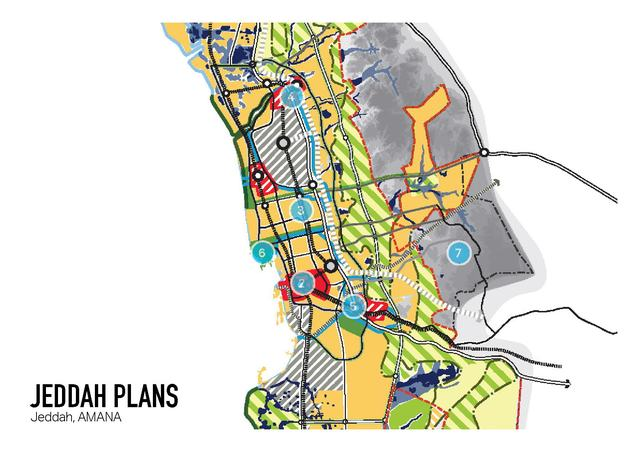

Project Raha Water Park
Tourism development · Jeddah, Saudi Arabia
Water park project in Jeddah for BCG and the Public Investment Fund, with WATG.
Partners

Client
BCG and Public Investment Fund (PIF)
More from Jeddah
 Al Hamdaniyah Investment Lands Concept Master Plan, JeddahJeddah · 2019
Al Hamdaniyah Investment Lands Concept Master Plan, JeddahJeddah · 2019 Al Jawhara ResidenceJeddah · 2017-2018
Al Jawhara ResidenceJeddah · 2017-2018
Jeddah City: Regional, Strategic and Local PlansJeddah · 2013-2015 Sharaan Nature Reserve Master PlanAlUla · 2021-2022
Sharaan Nature Reserve Master PlanAlUla · 2021-2022 Al Soudah Master Plan CompetitionAseer Region · 2020
Al Soudah Master Plan CompetitionAseer Region · 2020 Khaybar Heritage Area Master PlanKhaybar, AlUla · 2020
Khaybar Heritage Area Master PlanKhaybar, AlUla · 2020